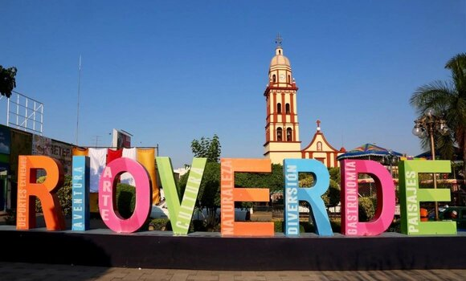

Welcome to Taqueria y Panaderia Puro Rioverde. We welcome you to our family owned and operated Restaurant where we hope you enjoy a taste of Mexican food inspired by Rioverde, SLP.
Bienvenidos a la Taqueria y Panaderia Puro Rioverde. Les damos la vienvenida a nuestro restaurante familiar y operado por nosotros mismos endonde esperamos que disfruten un poco de nuestro sabor de comida Mexiaca inspirada desde Rioverde, SLP.